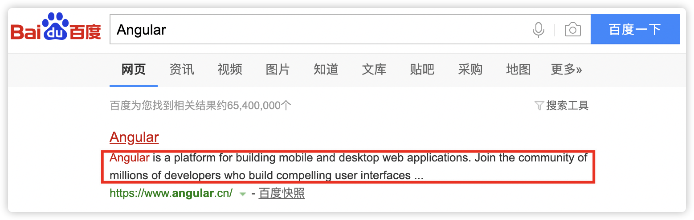
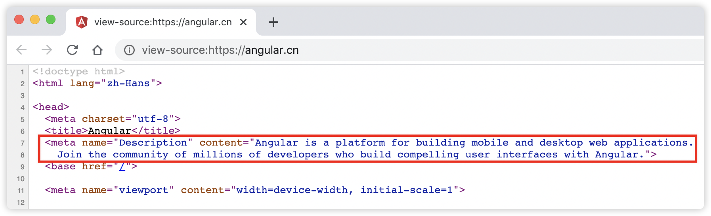
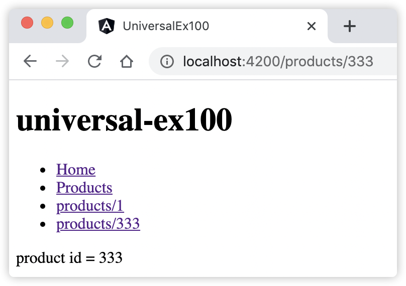

28 学习Angular服务端渲染¶
本章将向读者详细介绍Angular服务端渲染知识。首先带领读者了解Angular Universal的主要用例，以便知道什么时候使用它，以及为什么要使用它。然后将从一个现有的Angular应用开始，为应用添加Angular Universal功能，逐步深入使用Angular Universal的功能，同时详细的解释这个过程中的每个步骤。
28.1 什么是Angular Universal？¶
Angular Universal是一项在服务端运行 Angular 应用的技术。标准的 Angular 应用会执行在浏览器中，它会在 DOM 中渲染页面，以响应用户的操作。而 Angular Universal 会在服务端通过一个被称为服务端渲染（server-side rendering，简写SSR）的过程生成静态的应用页面。 Universal翻译成中文为“统一平台”，为了消除歧义，本书保留原义。通过Angular Universal（SSR），我们能够在服务器上将应用程序实时动态的（即：Node.js运行时环境）渲染为HTML，并在客户端请求时将其返回给浏览器。SSR也支持提前渲染静态页面，即可以把页面提前生成为静态的 HTML 文件，然后把它们作为静态文件部署在服务端。
简而言之，Angular Universal是一个Angular的预渲染解决方案。支持两种模式的预渲染，实时渲染和提前渲染。
28.2 Angular Universal如何工作？¶
当使用Angular Universal时，它会提前向用户呈现初始的HTML和CSS。这些内容提前在服务器上准备好了。当客户端请求服务器时，这些HTML和CSS将被立即返回给用户的客户端，这样用户就可以在屏幕上快速看到一些东西。到此，Angular Universal的工作完成了一半，接着， 它还会向浏览器运送一个正常的客户端Angular应用。这个 Angular 客户端应用就会接管页面，从此一切工作都像正常的单页应用一样，也就是说，所有的运行时渲染都会像往常一样直接在客户端进行。
28.3 为什么需要Angular Universal？¶
下面例举3个主要的使用Angular Universal的场景：搜索引擎优化(SEO)，帮助网络爬虫（SEO）和快速显示首页。下面对这3个场景分别进行介绍。
28.3.1 实现搜索引擎优化(SEO)来帮助网络爬虫¶
现在已经过了“酒香不怕巷子深”的年代了，科技在进度，各种信息满天飞，一个WEB应用是否被搜索引擎成功收录成了产品营销的关键KPI了，而国内的主流搜索引擎，如百度、必应等，目前无法对单页（SPA）应用实现爬虫，这意味着，这些搜索引擎无法搜索到大部分传统的Angular应用。
如今，大多数搜索引擎从页面头部部分存在的<meta>元数据标签中获取搜索结果中显示的标题和描述。
例如，以下是百度搜索 “Angular”的搜索结果，如图28-1所示。
图28-1 百度搜索 “Angular”的搜索结果
{kind=link}
图28-1中红框部分的文字内容来自搜索结果网站中的HTML，具体的就是HTMl中的<meta>元数据标签中的内容，详细如图28-2所示。
图28-2 搜索引擎优化(SEO)抓取的文本内容
{kind=link}
大多数搜索引擎爬虫希望这些重要的SEO元标签能够存在于服务器返回的HTML上，而不是在运行时由Javascript生成的。而这对于页面的其余内容也是一样的，大多数搜索引擎只会对直接从服务器返回的内容进行索引，而不会对使用Javascript加载的内容进行索引。所以，让我们的页面服务器端渲染这些元数据标签是在很多搜索引擎中正确排名的关键。
28.3.2 方便社交媒体爬虫的抓取¶
与搜索引擎会抓取我们的网页寻找标题和描述一样，微信，微博等社交媒体平台的爬虫也会做一些非常类似的事情。每当我们在社交媒体上发布一个链接时，社交媒体平台就会抓取页面的内容，它可能会尝试提取页面的一些信息，让帖子看起来更好。比如转发微信时，转发一个URL链接时，微信会根据URL页面内容建立了一个摘要卡片。为了让社交媒体平台的爬虫能够构建这个卡片，我们目前需要应用服务器端渲染，并填写一些特殊的元标签（本章后续内容将会介绍）。
28.3.3 快速显示首页¶
今年的疫情打断了大部分人的生活节奏，学生们被迫在家里上网课，关于网速的话题也从IT界蔓延到普通大众了。有调查显示：如果页面加载超过了3秒钟，那么 53% 的移动网站会被放弃。因此，快速显示第一页对于吸引用户是至关重要的。使用 Angular Universal，可以为应用生成“着陆页”，它们看起来就和完整的应用一样。这些着陆页是纯 HTML，并且即使 JavaScript 被禁用了也能显示。在实践中，使用一个着陆页的静态版本来保持用户的注意力。同时，也会在幕后加载完整的 Angular 应用。用户会觉得着陆页几乎是立即出现的，而当完整的应用加载完之后，又可以获得完整的交互体验。
28.4 Angular Universal 应用的特点¶
Angular Universal Web 服务器使用 Universal 模板引擎渲染出的静态 HTML 来响应对应用页面的请求。Angular Universal 应用除了服务端渲染外，与标准的Angular应用相比，存在下面这些方面的区别：
28.4.1 Universal 应用渲染出来的是完整的HTML代码¶
Universal 应用使用 SSR 技术渲染出HTML代码，当查看SSR渲染出来的页面的HTML源码时，发现页面HTML里面已经包含了全部完整的静态代码，而不再是之前标准的 Angular 应用的动态代码（（HTML里面仅含JavaScript动态脚本，看不到<body>里面的内容））。这些完整的HTML代码就是专门给搜索引擎和社交媒体爬虫使用的。
28.4.2 Universal 应用中不能使用浏览器对象¶
Angular Universal 应用使用 platform-server 模块，而不是 platform-browser 模块，来编译这个客户端应用，platform-server 模块提供了 DOM 的服务端实现、XMLHttpRequest 以及其它不依赖浏览器的底层特性。因此，服务端的Angular Universal 应用不能引用浏览器端独有的全局对象，比如 window、document、navigator 或 location对象。
同样，由于没有鼠标或键盘事件，因此 Angular Universal 应用也不能依赖于用户点击某个按钮来显示每个组件，Universal 应用必须仅仅根据客户端过来的请求决定要渲染的内容。
28.4.3 Universal Web服务器的选择¶
Universal Web 服务器接收并响应来自客户端（通常是浏览器）的 HTTP 请求，并回复静态HTML文件，包括如脚本、CSS 和图片。
当部署Angular Universal（SSR）为动态渲染应用时，任何一种 Web 服务器技术都可以作为 Angular Universal 应用的服务器，只要它能调用 Universal 的 renderModule() 函数，如：Node Express服务器。如果采用提前渲染成静态页面时，由于SSR渲染产物是静态文件，可以使用标准内容分发网络（CDN）进行部署。
28.5 实现Angular服务端渲染¶
为实现Angular服务端渲染，首先需要为Angular应用添加Angular Universal功能，然后根据需要，选择使用SSR动态渲染还是提前渲染。
28.5.1 为Angular应用添加Angular Universal功能¶
为Angular应用添加Angular Universal功能，即对现有的Angular工程添加服务器端应用模块，也是服务端渲染时的根模块，该模块对应的具体文件是app.server.module.ts。使用如下的的Angular CLI命令为Angular应用添加Angular Universal功能：
$ ng add @nguniversal/express-engine # 在项目的根目录下执行
执行命令后，控制台显示该命令执行时的详细信息：
Installing packages for tooling via npm. Installed packages for tooling via npm. CREATE src/main.server.ts (298 bytes) CREATE src/app/app.server.module.ts (318 bytes) CREATE tsconfig.server.json (325 bytes) CREATE server.ts (2018 bytes) UPDATE package.json (1720 bytes) UPDATE angular.json (5806 bytes) UPDATE src/main.ts (432 bytes) UPDATE src/app/app.module.ts (438 bytes) UPDATE src/app/app-routing.module.ts (284 bytes) ✔ Packages installed successfully.
从上述返回的信息看出，除了根模块（app.server.module.ts）文件外，该命令还额外创建了一些新文件，同时也修改了一些原文件。表28-1详细描述了这些新文件及原文件变更的说明。
文件名 |
文件内容或变更说明 |
main.server.ts |
这个新文件基本上只输出AppServerModule，它是Universal应用程序的入口 |
app.server.module.ts |
这是Universal服务端应用的根模块，它导入了AppModule，
以及来自@angular/platform-server的ServerModule，
并引导了与AppModule相同的AppComponent
|
tsconfig.server.json |
TypeScript 的服务端配置 |
server.ts |
创建及启动 Node Express 的服务程序文件 |
package.json |
新增了一些脚本命令：“dev:ssr”、“serve:ssr”、“build:ssr”和“prerender” |
angular.json |
新增了“server”节点 |
main.ts |
修改了渲染页面的方法 |
app.module.ts |
修改客户端应用模块，添加了BrowserModule模块的静态方法 |
app-routing.module.ts |
修改了初始路由的配置 |
28.5.2 实时查看Angular Universal功能渲染的页面¶
为Angular应用添加Angular Universal功能后，项目的根目录下将会生成了一个server.ts文件。该文件包含一个最小的服务器实现，用于在Node.js运行时使用Express框架渲染和服务Angular Universal应用程序。开发阶段，我们可以使用如下命令启动一个Node Express服务，Node Express为应用程序提供实时动态渲染服务：
npm run dev:ssr
服务启动完成后，按照控制台信息提示，可以通过URL地址：http://localhost:4200，来访问我们的Angular Universal应用。命令执行期间，应用程序代码的改动将会实时体现在页面上。
28.5.3 部署并使用SSR实时渲染动态页面¶
上面介绍了开发期间，实时查看Angular Universal功能渲染页面的方法，在实际工作中，可能需要部署在一个单独的环境中，因此需要先构建Angular Universal应用程序，具体命令如下：
npm run build:ssr
此构建命令执行完后，将会生成默认含有Node Express服务的静态的应用工程，其中入口文件main.js位于目录“dist/<your-app-name>/server/”中。可以通过运行以下命令启动Express服务加载这些静态资源：
npm run serve:ssr
命令执行完成后，按照控制台信息提示，可以通过URL地址：http://localhost:4000（注意端口号），来访问我们的Angular Universal应用。
28.5.4 使用SSR提前渲染静态页面¶
SSR还可以把页面预渲染生成 HTML 文件，然后把它们作为静态文件提供服务端使用。典型的应用场景就是使用标准内容分发网络（CDN）部署这些静态文件。使用如下命令，提前将应用渲染成静态页面：
npm run prerender # 或者 npm run <app_name>:prerender
不过，上述命令识别不了Angular Universal应用中的动态路由以及参数化的路由，简单的说，默认情况下，无法使用SSR的提前渲染功能渲染出动态和参数化路由的页面。要想达成此目标，需要额外的在命令后附带参数实现，具体的方式有两种：
ng run <app_name>:prerender --routes '/products/1' --routes '/products/333' # 第1种方式 ng run <app_name>:prerender --routesFile routes.txt # 第2种方式
上述命令中的第1种方式是为每个动态参数化的路由附加在“–routes”参数，第2种方式是将第一种方式种的路由全部放置在一个txt文本文件中，然后通过“–routesFile”指定这个文本文件。
注意
上述命令中的<app_name>，请替换为读者的实际应用名称。
无论采用上面的哪种方式，都需要将应用中的动态参数化的路由全部罗列出来。下面通过实战示例来演示如何实现Angular服务端渲染。
28.6 [示例 universal-ex100] 实现Angular服务端渲染¶
用Angular CLI构建应用程序，具体命令如下：
ng n universal-ex100 -S --routing --defaults=true
为应用添加Angular Universal功能，具体命令如下：
ng add @nguniversal/express-engine
在项目根目录下启动服务，具体命令如下：
npm run dev:ssr
查看应用程序结果。打开Web浏览器并浏览到 “http://localhost:4200”，应该看到文本 “Welcome to universal-ex100!”。
添加home、products模块和product组件，具体命令如下：
ng g m home --route home --module app ng g m products --route products --module app ng g c products/product -S
编辑product组件，添加获取动态路由参数。编辑文件src/app/products/product/product.component.ts，并将其更改为以下内容：
import { Component, OnInit } from '@angular/core'; import { ActivatedRoute } from '@angular/router'; import { switchMap } from 'rxjs/operators'; import { of } from 'rxjs'; @Component({ selector: 'app-product', template: ` <p> product id = {{ productId }} </p> `, styles: [ ] }) export class ProductComponent implements OnInit { constructor(private route: ActivatedRoute) { } productId = this.route.snapshot.paramMap.get('id'); ngOnInit(): void { this.route.paramMap.pipe( switchMap(params => of(params.get('id'))) ).subscribe((data) => { this.productId = data }); } }
编辑products路由，添加动态路由。编辑文件src/app/products/products-routing.module.ts，并将其更改为以下内容：
import { NgModule } from '@angular/core'; import { Routes, RouterModule } from '@angular/router'; import { ProductsComponent } from './products.component'; import { ProductComponent } from './product/product.component'; const routes: Routes = [ { path: '', component: ProductsComponent }, { path: ':id', component: ProductComponent } // 👈👈👈 ]; @NgModule({ imports: [RouterModule.forChild(routes)], exports: [RouterModule] }) export class ProductsRoutingModule { }
编辑根组件模板。编辑文件src/app/app.component.html，并将其更改为以下内容：
<h1>{{title}}</h1> <ul> <li><a routerLink="/home">Home</a></li> <li><a routerLink="/products">Products</a></li> <li><a routerLink="/products/1">products/1</a></li> <li><a routerLink="/products/333">products/333</a></li> </ul> <router-outlet></router-outlet>
观察应用程序页面，页面显示效果如图28-3所示：
图28-3 演示实现Angular服务端渲染
{kind=link}
在上面的步骤中，完成了以下内容：
为应用添加了Angular Universal功能，并在其中添加了home、products模块和product组件；
在product组件类ngOnInit()方法中，通过RxJS操作符订阅了当前路由的参数，当单击页面上的link，URL地址变化时，模板中的内容随着变化；
由于我们采用的是开发模式下启动ssr服务，除了每个页面渲染的结果是完整的HTML外，其他的看不出什么区别。接下来，我们演示使用SSR提前渲染静态页面。
演示使用SSR提前渲染静态页面。使用如下命令，提前将应用渲染成静态页面：
npm run prerender
命令执行完成后，控制台将会打印下面的信息：
CREATE /universal-ex100/dist/universal-ex100/browser/index.html (1502 bytes) CREATE /universal-ex100/dist/universal-ex100/browser/products/index.html (1588 bytes) CREATE /universal-ex100/dist/universal-ex100/browser/home/index.html (1576 bytes)
查看上述信息，发现仅提前渲染了静态路由的页面，而动态路由（“/products/:id”）的页面并没有被渲染生成。
首先，在项目的根目录下新建routes.txt文件，并将其更改为以下内容：
/products/1 /products/222 /products/333
然后，使用下面的命令提前渲染生成动态路由的页面：
ng run universal-ex100:prerender --routesFile routes.txt
命令执行完成后，控制台将会打印下面的信息：
CREATE /universal-ex100/dist/universal-ex100/browser/index.html (1502 bytes) CREATE /universal-ex100/dist/universal-ex100/browser/products/333/index.html (1554 bytes) CREATE /universal-ex100/dist/universal-ex100/browser/products/1/index.html (1552 bytes) CREATE /universal-ex100/dist/universal-ex100/browser/home/index.html (1576 bytes) CREATE /universal-ex100/dist/universal-ex100/browser/products/222/index.html (1554 bytes) CREATE /universal-ex100/dist/universal-ex100/browser/products/index.html (1588 bytes)
通过live-server命令部署静态页面，具体命令如下：
$ live-server dist/universal-ex100/browser/ Serving "browser/" at http://127.0.0.1:8080 Ready for changes GET /products/666 404 2.491 ms - 151
live-server是一个 Node.js 模块，底层运行在Express服务器上，用户可以指定一个目录作为该服务部署的根目录。通过控制台打印信息，访问地址“http://127.0.0.1:8080”地址，观察应用程序页面，页面显示效果如图28-3所示一模一样。
在上面的步骤中，使用prerender命令和“–routesFile”参数，为应用程序的动态路由也渲染生成了静态HTML页面；
在此示例的routes.txt文件中，我们仅仅演示了3个动态路由(3个不同的id值，事实上，其中id=222的路由是为了演示额外添加的)，也许在实际中需要穷尽所有的ID值，这些ID可能来自后端的RestFul API，也可能来自数据库。
注意
如果本地没有安装live-server，可以通过命令“npm install -g live-server # -g表示global，意思是全局安装”进行安装。
28.7 小结¶
本章主要介绍了Angular服务端渲染的知识，介绍了什么是Angular Universal，Angular Universal如何工作以及为什么需要Angular Universal。然后分别介绍了两种服务端渲染的特点以及实现方式。最后通过示例演示了如何实现Angular服务端渲染。